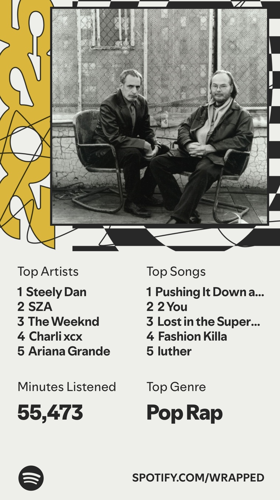

My Listening Habits

Music takes up a big part of every week, and Spotify makes it easy to see just how much. Spotify has a feature that allows me to view my listening statistics over time. Over the past five weeks, I listened for a total of 6,524 minutes, which works out to about 22 hours per week, or a little over three hours every day. The chart below shows my listening for each week.
The busiest listening week was October 12 to 18, where I listened for 1,557 minutes, and the quietest was October 19 to 25, at 1,085 minutes. These minutes still add up to more than 18 hours of music, so I would still say my headphones really are always on. Most weeks stay between 1,200 and 1,400 minutes, which tells me that listening to music has truly become a regular habit for me, and I don't do many things without music.
When I listen to music, I pay attention to the instrumentation, song structure, and lyricism. I also make sure to pay attention to the details, such as harmonies and how a singer shapes a phrase, to make sure that I understand the full meaning of a song. This is probably why my taste is so eclectic, because I like finding out how different artists and genres convey emotions using the same techniques in their own way.
I think one of the main reasons I interpret music in this way is because of my dad. His brain works the same way mine does, so when I was growing up he showed me a lot of his favorite artists and explained why he appreciates their music. He was born in 1969, so the artists he loves aren't always popular with people my age group (he likes to call me an "old soul"), but that hasn't prevented me from developing my own unique taste.
Overall, music plays a central role in my daily life, and I'm grateful to enjoy such a rich variety of artists and genres that inspire me and make me who I am.
Minutes Listened Per Week
Five of my Current Favorite Songs
- Somebody to Love - Queen
- In Your Atmosphere - John Mayer
- (One of Those) Crazy Girls - Paramore
- Edge of Desire - John Mayer
- Leader of the Band - Dan Fogelberg